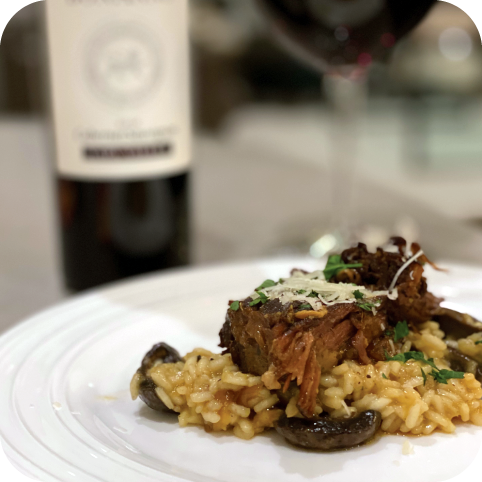

Braised Short Rib Risotto

Description
A tender beef short rib is served over a bed of creamy risotto.
This dish is perfect as an everyday meal, while being fancy enough for special occasions.
Ingredients
Short Rib
- tomato paste
- garlic
- thyme
- bay leaf
- short ribs
- carrots
- celery
- onion
- beef broth
- salt & pepper
Risotto
- arborio rice
- butter
- Parmesan cheese
- onions
- salt & pepper
- chicken broth
Directions
Short Rib
- Preheat oven to 325 Degrees
- Heat a pot or Dutch oven over high heat. Season the ribs with salt and pepper.
- Add 2 teaspoons of oil to the pot. Add the ribs to the pan and cook until golden brown.
- Add the carrots, celery, and onion to the pot and season with a pinch of salt and pepper. Cook for 3-4 minutes.
- Stir in the garlic and tomato paste. Cook one more minute.
- Add the beef broth and fresh herbs. Add the ribs back into the liquid.
- Cover the pot and transfer to the oven. Cook for 1.5-2.5 hours or until meat falls off the bone.
- Transfer the ribs to a plate. Remove the bone when cooled and shred the meat.
Risotto
- Add the chicken broth to a saucepan over low heat.
- Heat a large, deep skillet over medium heat. Add butter to melt.
- Mix in the onion and cook for 3-4 minutes until soft. Season with a pinch of salt and pepper.
- Add the rice and cook for 2-3 minutes until slightly toasted, stirring frequently.
- Stir frequently as you add two ladles of broth to the rice. When the liquid has been absorbed, add another ladle of broth. Cook until the broth is absorbed before adding more, stirring frequently.
- Take a small taste. If the rice is firm, add more broth and cook until soft. When done, turn off the heat and add the cheese. Stir to combine. Taste until seasoned appropriately.